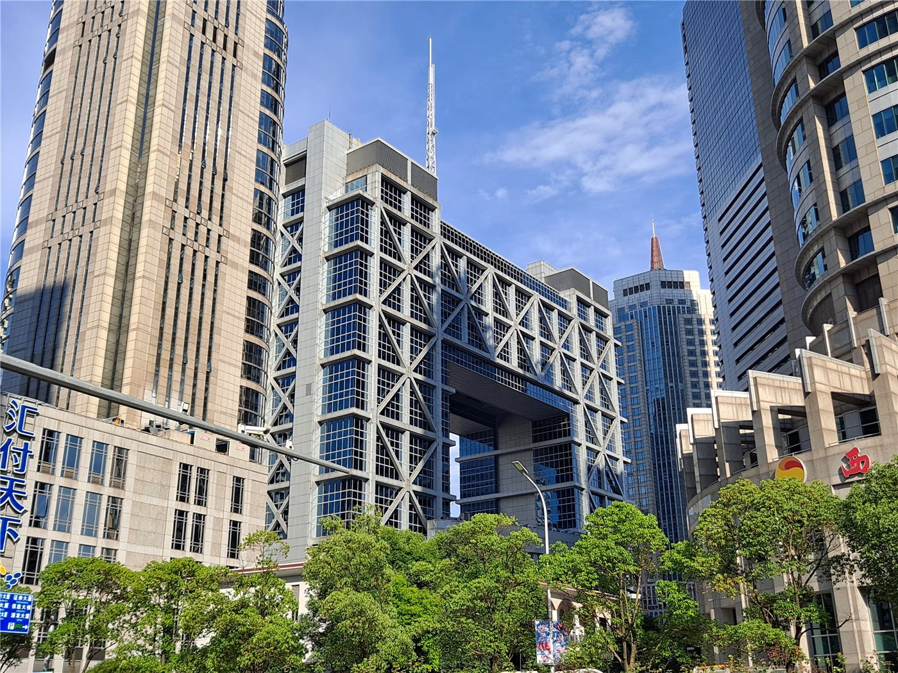

대만 지수선물 야간장 45,000선 붕괴… 미 장기채 금리 상승 여파
미국 장기 국채 금리가 19년 만의 높은 수준으로 올라서면서 대만 가권지수 선물 야간장이 45,000선을 내줬다. 미국 30년물 국채 수익률이 5.3%대로 올랐고, 필라델피아 반도체지수는 3% 하락했다.
마약란 기자 · 2026.08.28
橋경제·문화·스포츠

금리 상승의 배경으로는 재정적자 확대에 따른 국채 공급 압력과, 장기 투자자들이 더 높은 위험 보상을 요구하는 흐름이 함께 지목된다. 여기에 인공지능 관련 기업의 대규모 회사채 발행이 이어지면서 채권 시장 전반의 수급에 부담이 더해졌다는 분석이 나온다.
광고 문의 · 300×250금리가 오르면 미래 이익의 현재가치가 줄어들어 성장주가 먼저 조정을 받는다. 반도체 지수의 낙폭이 컸던 것도 이 경로로 설명된다. 대만 증시는 반도체 비중이 높아 미국 기술주 흐름과 동조성이 강하다.
지수 관련 상품에서는 개별 종목 대신 지수를 사는 흐름이 관측됐다. 대만의 대표 상장지수펀드(ETF)에서 대량 짝짓기 거래가 나타난 것도 기관이 종목 선별을 줄이고 지수와 대형주로 이동하는 국면과 맞물린다.
국제 유가도 함께 올랐다. 브렌트유가 배럴당 91달러 선까지 오르면서 물가와 금리 기대가 동시에 자극됐고, 위험자산 선호가 약해졌다.
한국과 대만 증시는 반도체 업황이라는 같은 축을 공유한다. 금리와 유가가 동시에 오르는 국면에서는 두 시장의 변동이 비슷한 방향으로 나타나는 경우가 많다.
출처·참고 (사실 확인용 — 본문은 직접 재작성)
· 聯合新聞網·鉅亨網·世界日報 (2026.08.18)
· 聯合新聞網·鉅亨網·世界日報 (2026.08.18)